Format
4-track tape
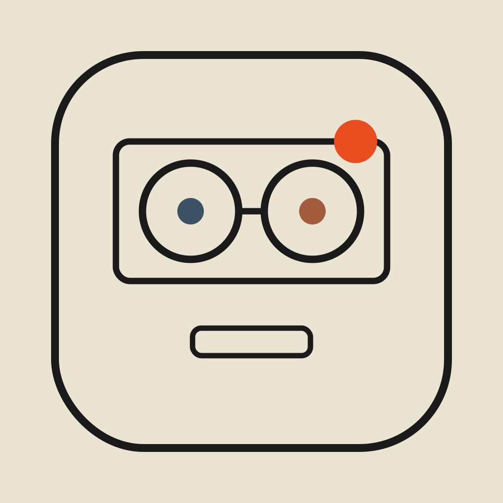
TAPEDESK — a 4-track tape recorder No. 01 · MMXXVI · iPhone / iOS 17+A four-track tape recorder · iPhone
An instrument, not a studio. Open it, hit rec — the idea's on tape before you've thought about it.
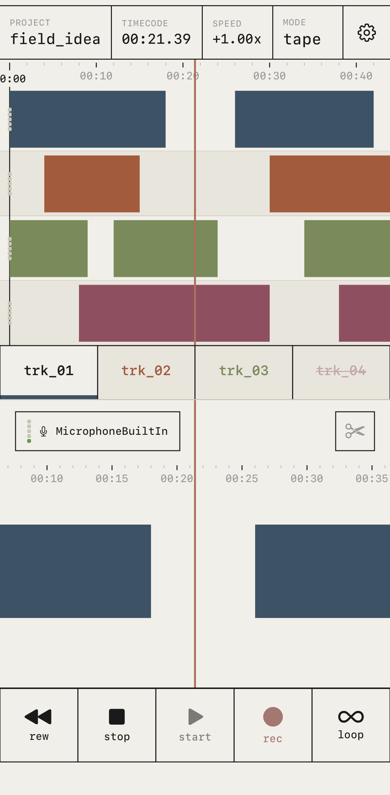
DEMO — 16s, real screen, real sound. Drag the tape to 0.5× and the pitch sinks with it — no "keep pitch" switch, that's the point. Then the looper stacks two passes live. Lands with the app.
Not a spec sheet. The handful of things that make it feel like gear, not software.
Four tracks, a tape ruler, a hard playhead. Hit rec and the region's just there — no arming, no project setup, no ceremony.
0.25× to 2×, across the whole tape. Slow it and the voice sinks; speed it and it climbs, like the cassette decks this grew out of. There is no "keep pitch" switch. That's the point.
Turn loop on, play a part, play another over it. It stacks while you listen. Hear the layers build, commit when it's right.
Magnetic-tape saturation, a tape delay, an 8-line reverb — three effects, not licensed plugins. They print into the take: once it's down, it's down, like a cassette. Most apps license a plugin and call it tape. These three are ours, in C++.
Ableton Link or MIDI Clock — start your gear, TapeDesk falls into step and rides the tempo. Wireless, no cables, no setup screen.
No subscription, no account, no email wall. No analytics, no tracking. Your recordings never leave the phone. We mean it literally.
No nested menus, no mode soup. The whole app is a tape view and a mixer, with everything else one tap away. Here it is, running — and one screen earns its own page. It's next.
Four tracks, a tape ruler, a hard orange playhead. Record and the region just appears.
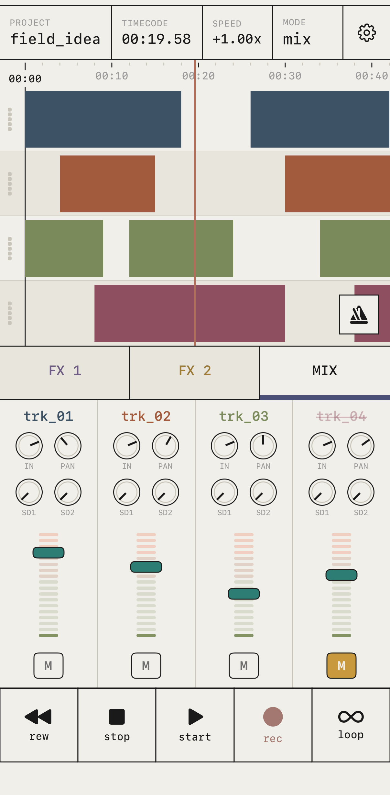
Four channel strips: gain, pan, two sends, a teal fader, a 120 fps meter. Mute lives right there.
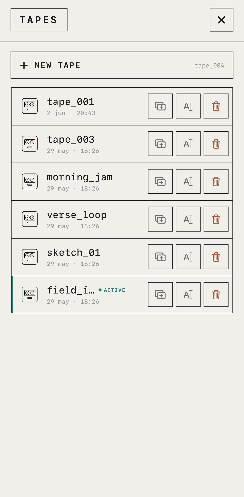
Every take is a tape. Name it, duplicate it, bin it. The active one glows teal.
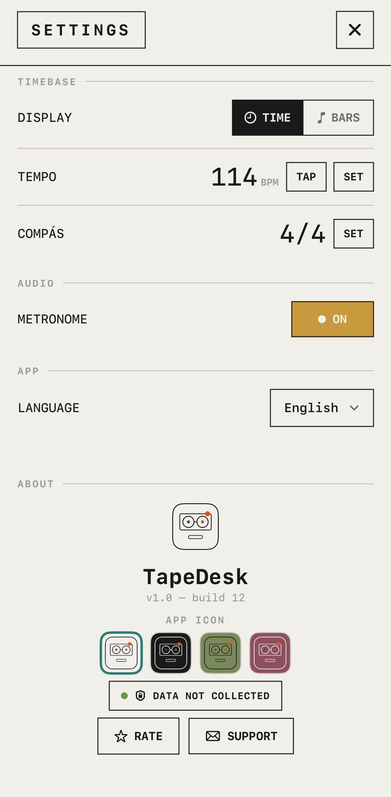
Tempo, time signature, metronome, language — and four icon skins. "Data Not Collected", in writing.
Most apps reach for a plugin and call it a tape sound. We drew three of our own, then wrote them in C++ inside the engine. The picture on each one isn't a label — it's the shape of what it does to your signal.
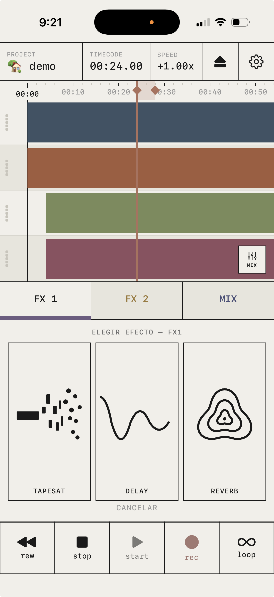
Open one and it's not a toggle — it's an instrument with its own face and its own four hands.
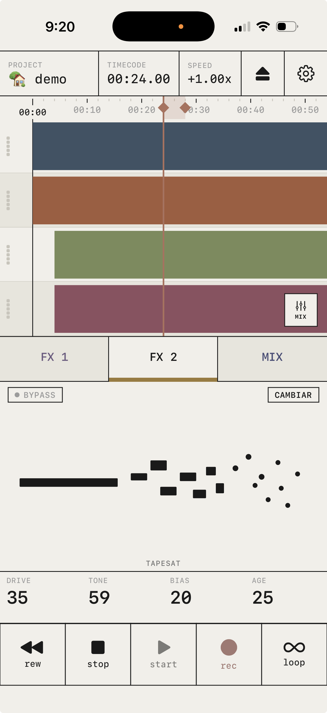
drive 35 · tone 59 · bias 20 · age 25
Magnetic saturation by Jiles–Atherton hysteresis. Push age and the tape gets tired; bias is the magnetic sweet-spot you'd set by ear on a real deck.
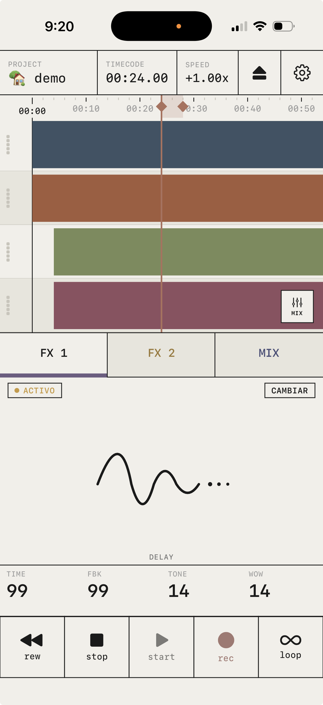
time 99 · fbk 99 · tone 14 · wow 14
wow is the pitch waver — because real tape wavered. Crank fbk and it smears instead of repeats. Lit amber because it's live on the bus.
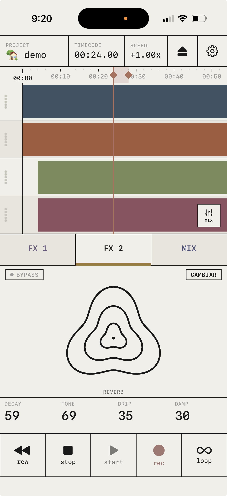
decay 59 · tone 69 · drip 35 · damp 30
An 8-line Jot FDN — a room built from feedback, not a sample of someone else's hall. drip is the wet character; damp is how fast it loses its highs.
Printed, not previewed. No latency you can feel: it runs in the same place as everything else, live. Bounce, and what you heard is on the tape — wow, hiss, room and all. No render step where it comes out different. It already sounded like that.
Make the thing, then press eject. The master or the stems, WAV or M4A, the whole tape or one clean loop — straight to the share sheet. No DAW, no export ceremony.
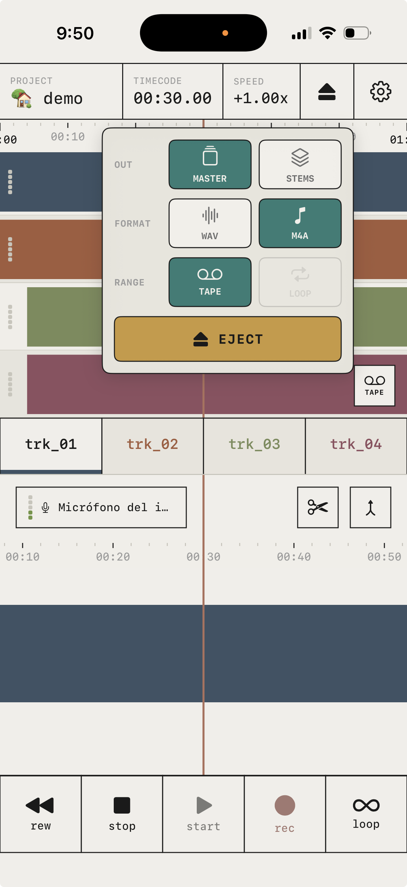
The B-side
Below here is the notebook: the mark, the colours, the mixer that took four passes to get right. You met the effects upstairs; this is the physics under them. Skip it and just buy the deck. But this is where it came from.
Zero perceptible latency, no hitches, no dropouts. If everything else fails, the physical feel must hold. The audio thread is sacred ground.
One screen, two modes: tape and mix. Everything else is one tap away. There is no fourth menu hiding behind the third.
One price. No accounts, no ads, no analytics, no tracking. Your recordings never leave the device.
Look again: two tape reels become eyes, the record lamp becomes a warm orange freckle, the cassette window becomes a mouth. A machine that looks back. Six skins were drawn from the track palette — and the palette tells you which two had to go.
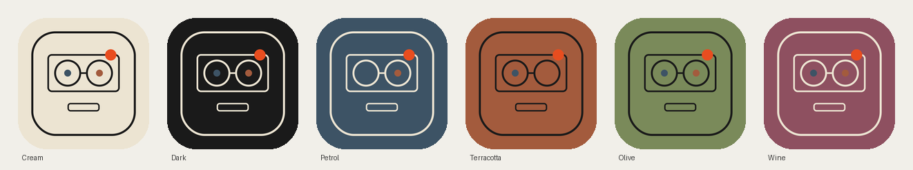
Colour here is not decoration — it is state. The four track hues belong to the tracks and nothing else. So a control needs its own language: one colour for live & movable, one for held & locked. Three pairings were rendered onto the real fader — not abstract swatches — and judged in place.
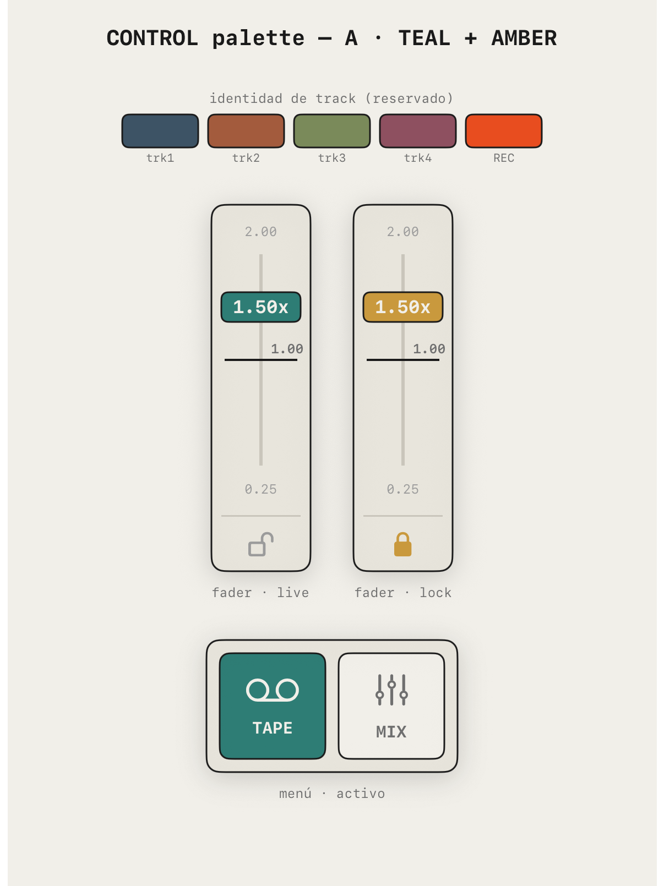
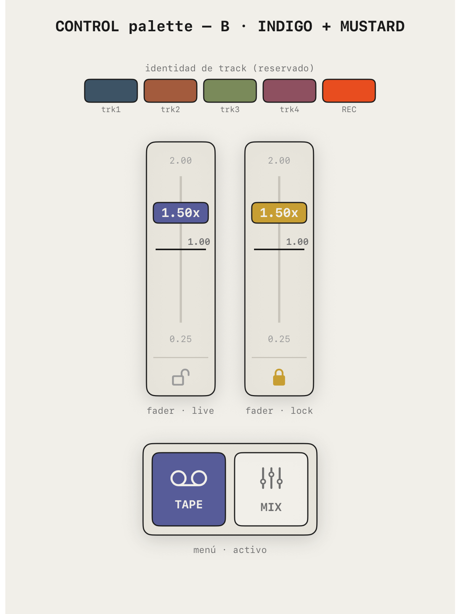
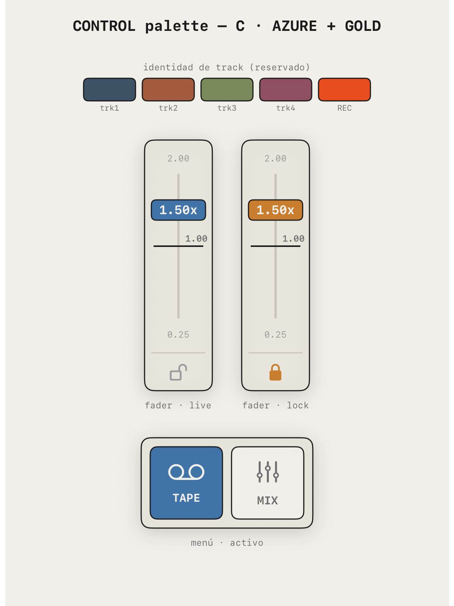
The rule, then the rule moving. The speed control had to show its state without a word — resting at 1.00×, bending live in teal, locked in amber. Same two colours, doing their one job. The label burned into the plate ("REAL component") is the workshop's, not yours.
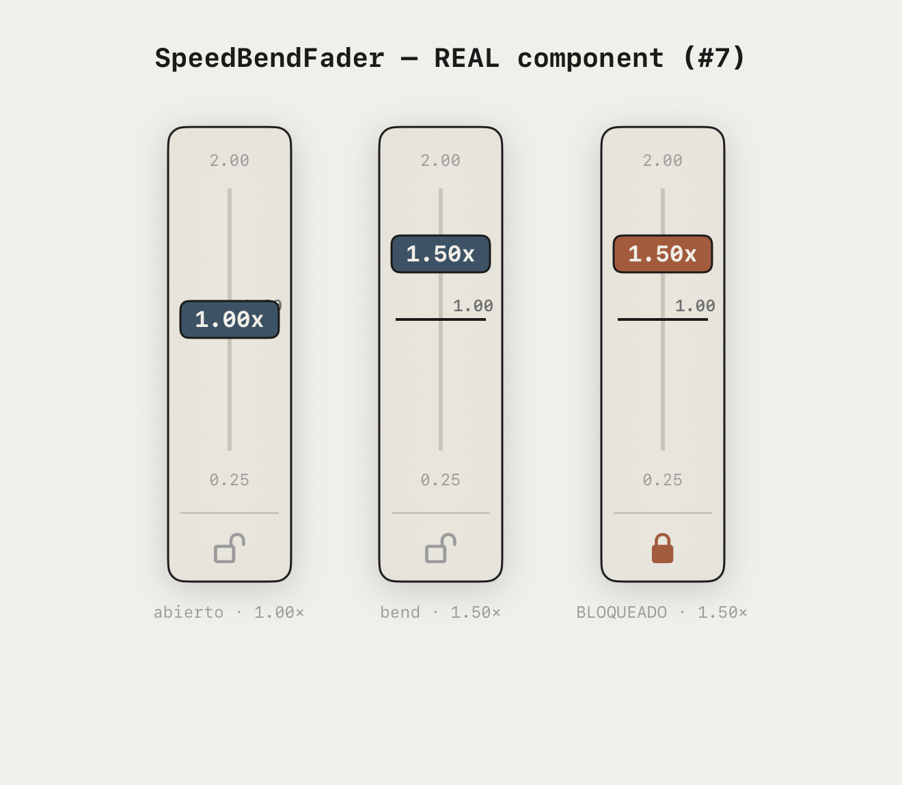
A fader can't lie about where it is. That's the whole point of one. The mixer took four passes to keep it that honest: every strip reads at a glance, and the live colour is reserved for the one thing you can move.
Fader plus meter. Right idea, no grammar yet — everything competing for attention.
Gain and pan knobs, two send returns. A channel becomes a channel.
Spacing pulled in, meters quieted, mute given a home. The eye stops wandering.
Teal cap = the movable truth. Track names keep their identity colour; a muted track greys out, struck through.
You met the effects upstairs. Here's the physics under them — for whoever scrolled this far.
Jiles–Atherton magnetic hysteresis — the actual physics of how iron remembers a signal, not a soft-clip curve pretending.
A delay line carrying the transport's own drag and wow — the pitch wavers because real tape did.
An 8-line Jot FDN — a feedback delay network, the grown-up way to build a room.